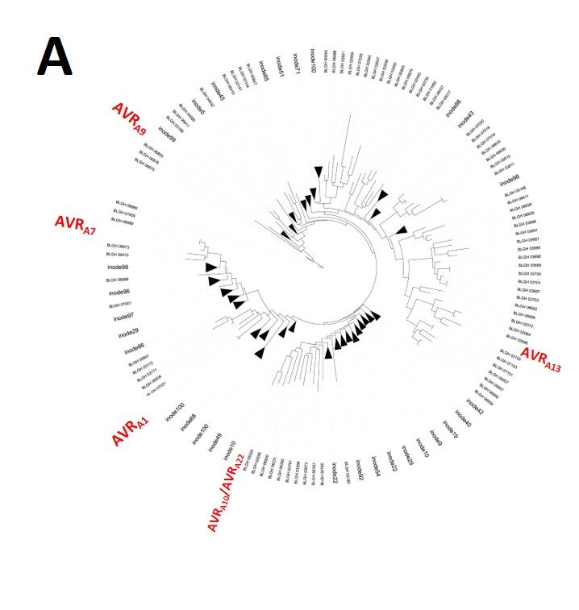

Our Research
Background
Figure 1: Schematic representation of the molecular components underlying plant-pathogen interactions. A: Pathogens (here: Blumeria graminis) secret effectors through feeding structures known as haustoria into the plant cytoplasm. Effectors interfere with host components to promote pathogen proliferation and disease development (here: powdery mildew on barley) on susceptible host lines. B: Resistant plants carry intracellular immune receptors (here: MLA) that identify the infection by recognising pathogen effectors (effectors recognised by MLA are known as AVRA effectors). Effector recognition causes a local cell death and resistance. This prevents the spread of obligate biotrophic pathogens, as these pathogens require living host cells for proliferation.
Despite their undisputed importance in the development of diseases, the genetic isolation and functional characterisation of key fungal virulence effectors from the hundreds of small proteins secreted during the pathogenesis of host diseases remains challenging (Lo Presti et al., 2015; Uhse & Djamei, 2018). We primarily focus on the powdery mildew AVRA effectors secreted into the barley (Hordeum vulgare) host cells by the powdery mildew fungus Blumeria graminis forma specialis hordei (Bgh). The importance of AVRA effectors in fungal virulence is underlined by the evolutionary concept of host NLRs sensing crucial pathogen effectors: AVRA variants are recognised for resistance to Bgh by the allelic barley Mildew locus A encoded NLRs (MLAs) (Mooseman & Schaller 1960; Glawe 2008; Seeholzer et al., 2010; Lu et al., 2016; Maekawa et al., 2018; Saur et al., 2019) (Fig. 1B). Remarkably, the isolate-specific rust effectors AvrSr33 and AvrSr50 encoded by the wheat stem rust fungus Puccinia graminis f. sp. tritici (Pgt) are recognised by Mla homologs from wheat and rye (Periyannan et al., 2013; Mago et al., 2015; Chen et al., 2017). As such, MLA recognises effectors from entirely unrelated obligate biotrophic phytopathogens. It is thus possibly that the manipulation of AVRA host targets is crucial for fungal phytopathogens to etablish of a biotrophic lifestyle.
AVRA function
The NLRs encoded at allelic barley Mla have been studied extensively for decades (Mooseman & Schaller 1960). Only in the last few years, we have been able to isolate the powdery mildew genes encoding the AVRA effectors AVRA1, AVRA6, AVRA7, AVRA9, AVRA10, AVRA13, AVRA22, which are recognised by MLA1, MLA6, MLA7, MLA9, MLA10, MLA13 and MLA22, respectively (Lu et al., 2016, Saur et al., 2019, Bauer et al., 2021).


Figure 2: Structural predictions suggest a common fold for the sequence-unrelated AVRA effectors. A: Maximum likelihood phylogeny tree for the 805 predicted secreted proteins of Bgh DH14 lacking respective signal peptides. Isolated AVRA effectors are highlighted; triangles depicting nodes, which are collapsed to allow a more compact visualization. Modified from Saur et al., 2019. B: Structural similarity searches via Intfold v5.0 propose a common fold with a central α-helix facing three to four β-sheets for the powdery mildew AVRA effectors.
Figure 3: AVRA effectors lack residues for RNase activity and don’t form a ligand binding pocket. A: Sequence analysis of structural overlay of the Fusarium RNase F1 structure and predicted AVRA13 structure. Amino acids (aa) highlighted in blue form the nucleotide binding pocket in the functional F1 RNase, the once in red highlight the corresponding aa in AVRA13 . Errors indicate the aa conserved amongst functional RNases and required for enzymatic ribonuclease activity. B: Overlay of the RNase F1 structure (PDB:1FTU) bound to the 2’GMP ligand with the predicted AVRA13 structural fold. Magnification of the RNase F1 ligand binding pocket demonstrates that the respective residues in AVRA13 face away from the 2’GMP ligand bound in the structure of the functional F1 RNase.
In fact, ~15% of the Bgh candidate-secreted effector proteins (CSEPs) were predicted to share structural similarities to ribonucleases (Pedersen et al., 2012, Spanu, 2017). Like all these CSEPs, all isolated AVRA effectors lack the conserved catalytic residues for RNases activity (Hill et al., 1983) suggesting that AVRA effectors are unable to process nucleotides (Figure 3A). This catalytic inactivity was confirmed experimentally (Bauer et al., 2021). Overlay of the functional Fusarium RNase F1 structure (PDB:1FTU) bound to the 2’GMP ligand (Vassylyev et al., 1993) with the predicted AVRA structural folds demonstrates that the AVRA residues that are equivalent to those form the ligand binding pocket in the RNase F1 structure, face away from the 2’GMP ligand of RNase F1 (Fig. 3B, example: AVRA13). The analysis suggests that AVRA effectors don’t only lack the ability to process nucleotides, but are also unable to bind nucleotide ligands. In agreement, we have also not detected any ability of heterologous AVRA13 protein to bind and thereby protect ribosomal RNA processing by a functional RNase (Bauer et al. 2021). This leaves us with the question about the virulence function of AVRA effectors.
Most effectors that are delivered by filamentous eukaryotic pathogens into host cells and recognised there by immune receptors lack detectable enzymatic activity. These effectors may instead function as structural inhibitors of their host targets.
We apply unbiased molecular, biochemical and genetic approaches to detect AVRA host targets and investigate the AVRA virulence function.
Literature
Bauer S, Yu D, Lawson AW, Saur IML, Frantzeskakis L, Kracher B, Logemann E, Chai J, Maekawa T, Schulze-Lefert P. 2021. The leucine-rich repeats in allelic barley MLA immune receptors define specificity towards sequence-unrelated powdery mildew avirulence effectors with a predicted common RNase-like fold. PLoS Pathogens 17(2):e1009223.
Chen J, Upadhyaya NM, Ortiz D, Sperschneider J, Li F, Bouton C, Breen S, Dong C, Xu B, Zhang X, Mago R, Newell K, Xia X, Bernoux M, Taylor JM, Steffenson B, Jin Y, Zhang P, Kanyuka K, Figueroa M, Ellis JG, Park RF, Dodds PN. 2017. Loss of AvrSr50 by somatic exchange in stem rust leads to virulence for Sr50 resistance in wheat. Science 358(6370): 1607-1610.
Dodds PN, Rathjen JP. 2010. Plant immunity: towards an integrated view of plant-pathogen interactions. Nature Reviews Genetics 11(8): 539-548.
Hill, C.P., Dodson, G.G., Heineman, U., Saenger, W., Mitsui, Y., Nacamura, K., Borisov, S., Tishenko, G., Polyakov, K., and Pavlovsky, S. 1983. The structural and sequence homology of a family of microbial ribonucleases. Trends in Biochemical Sciences 8:364–369.
Lo Presti L, Lanver D, Schweizer G, Tanaka S, Liang L, Tollot M, Zuccaro A, Reissmann S, Kahmann R. 2015. Fungal Effectors and Plant Susceptibility. Annual Review of Plant Biology 66: 513-545.
Lu XL, Kracher B, Saur IML, Bauer S, Ellwood SR, Wise R, Yaeno T, Maekawa T, Schulze-Lefert P. 2016. Allelic barley MLA immune receptors recognize sequence-unrelated avirulence effectors of the powdery mildew pathogen. Proceedings of the National Academy of Sciences of the United States of America 113(42):E6486-E6495.
Maekawa T, Kracher B, Saur IML, Yoshikawa-Maekawa M, Kellner R, Pankin A, von Korff M, Schulze-Lefert P. 2018. Subfamily-Specific Specialization of RGH1/MLA Immune Receptors in Wild Barley. Molecular Plant Microbe Interactions 32(1):107-119.
Mago R, Zhang P, Vautrin S, Simkova H, Bansal U, Luo MC, Rouse M, Karaoglu H, Periyannan S, Kolmer J, et al. 2015. The wheat Sr50 gene reveals rich diversity at a cereal disease resistance locus. Nature Plants 1(12):5118. Moseman JG, Schaller CW. 1960. Genetics of the Allelic Series at the Mla Locus in Barley and Cultures of Erysiphe-Graminis F Sp Hordei That Differentiate These Alleles. Phytopathology 50(10): 736-741.
Pedersen C, Ver Loren van Themaat E, McGuffin LJ, Abbott JC, Burgis TA, Barton G, Bindschedler LV, Lu X, Maekawa T, Wessling R, Cramer R, Thordal-Christensen H, Panstruga R, Spanu PD. 2012. Structure and evolution of barley powdery mildew effector candidates. Bmc Genomics 13:694
Periyannan S, Moore J, Ayliffe M, Bansal U, Wang X, Huang L, Deal K, Luo M, Kong X, Bariana H, Mago R, McIntosh R, Dodds P, Dvorak J, Lagudah E. 2013. The Gene Sr33, an Ortholog of Barley Mla Genes, Encodes Resistance to Wheat Stem Rust Race Ug99. Science 341(6147):786-788.
Saur IML, Panstruga R, Schulze-Lefert P. 2021. NOD-like receptor-mediated plant immunity: from structure to cell death. Nature Reviews Immunology 21(5):305-318.
Saur IML, Hückelhoven R. 2020. Humboldt Review: Recognition and defence of plant-infecting fungal pathogens. Journal of Plant Physiology 256(153324).
Saur IML, Bauer S, Kracher B, Lu XL, Franzeskakis L, Muller MC, Sabelleck B, Kummel F, Panstruga R, Maekawa T, et al. 2019. Multiple pairs of allelic MLA immune receptor-powdery mildew AVR(A) effectors argue for a direct recognition mechanism. Elife 8:e44471
Seeholzer S, Tsuchimatsu T, Jordan T, Bieri S, Pajonk S, Yang WX, Jahoor A, Shimizu KK, Keller B, Schulze-Lefert P. 2010. Diversity at the Mla Powdery Mildew Resistance Locus from Cultivated Barley Reveals Sites of Positive Selection. Molecular Plant-Microbe Interactions 23(4):497-509.
Spanu PD. 2017 Cereal immunity against powdery mildews targets RNase-Like Proteins associated with Haustoria (RALPH) effectors evolved from a common ancestral gene. New Phytologist 213:969–971.
Uhse S, Djamei A. 2018. Effectors of plant-colonizing fungi and beyond. Plos Pathogens 14(6):e1006992
Vassylyev DG, Katayanagi K, Ishikawa K, Tsujimoto-Hirano M, Danno M, Pähler A, Matsumoto O, Matsushima M, Yoshida H, Morikawa K. 1993 Crystal structures of ribonuclease F1 of Fusarium moniliforme in its free form and in complex with 2’GMP. Journal of Molecular Biology 230(3):979-96.
© Isabel Saur